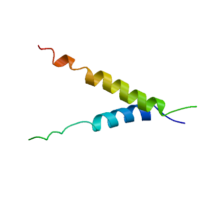
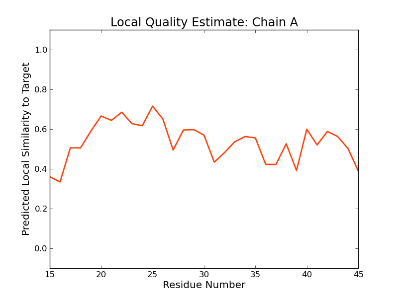
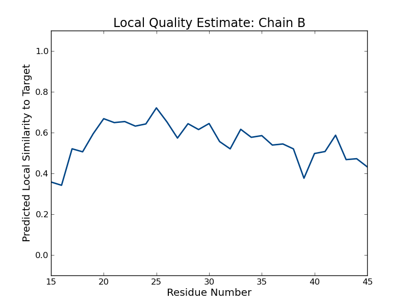
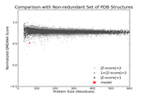

| SWISS-MODEL Homology Modelling Report |
Model Building Report
This document lists the results for the homology modelling project "Q93VI0" submitted to SWISS-MODEL workspace on Feb. 28, 2018, 12:17 p.m..The submitted primary amino acid sequence is given in Table T1.
If you use any results in your research, please cite the relevant publications:
- Biasini, M., Bienert, S., Waterhouse, A., Arnold, K., Studer, G.,
Schmidt, T., Kiefer, F., Cassarino, T.G., Bertoni, M., Bordoli, L.,
Schwede, T. SWISS-MODEL: modelling protein tertiary and quaternary
structure using evolutionary information. Nucleic Acids Res. 42, W252-W258
(2014).

- Guex, N., Peitsch, M.C., Schwede, T. Automated
comparative protein structure modeling with SWISS-MODEL and
Swiss-PdbViewer: A historical perspective. Electrophoresis 30,
S162-S173 (2009).
- Bienert, S., Waterhouse, A., de Beer, T.A., Tauriello, G., Studer,
G., Bordoli, L., Schwede, T. The SWISS-MODEL Repository - new features and
functionality. Nucleic Acids Res. 45, D313-D319 (2017).
- Benkert, P., Biasini, M., Schwede, T. Toward the
estimation of the absolute quality of individual protein structure
models. Bioinformatics 27,
343-350 (2011).
- Bertoni, M., Kiefer, F., Biasini, M., Bordoli, L.,
Schwede, T. Modeling protein quaternary structure of homo- and
hetero-oligomers beyond binary interactions by homology. Scientific
Reports 7 (2017).
Results
The SWISS-MODEL template library (SMTL version 2018-02-21, PDB release 2018-02-16) was searched with BLAST (Camacho et al.) and HHBlits (Remmert et al.) for evolutionary related structures matching the target sequence in Table T1. For details on the template search, see Materials and Methods. Overall 55 templates were found (Table T2).
Models
The following model was built (see Materials and Methods "Model Building"):
Model #01 | File | Built with | Oligo-State | Ligands | GMQE | QMEAN |
|---|---|---|---|---|---|---|
|  | PDB | ProMod3 Version 1.1.0. | homo-dimer (matching prediction) | None | 0.16 | -4.01 |
|  |  |
| Template | Seq Identity | Oligo-state | QSQE | Found by | Method | Resolution | Seq Similarity | Range | Coverage | Description |
|---|---|---|---|---|---|---|---|---|---|---|
| 2lcx.1.A | 36.67 | homo-dimer | 0.00 | HHblits | NMR | NA | 0.36 | 15 - 45 | 0.41 | Receptor tyrosine-protein kinase erbB-4 |
Target MAAEFDGKIESKGLNPG-LIVLLVIGGLLLTFLVGNFI-LYTYAQKNLPPRKKKPVSKKKMKKEKMKQGVQVPGE
2lcx.1.A --------------ARTPLIAAGVIGGLFILVIVGLTFAVYV-RRKS----------------------------
Materials and Methods
Template Search
Template search with BLAST and HHBlits has been performed against the SWISS-MODEL template library (SMTL, last update: 2018-02-21, last included PDB release: 2018-02-16).
The target sequence was searched with BLAST against the primary amino acid sequence contained in the SMTL.
An initial HHblits profile has been built using the procedure outlined in (Remmert et al.), followed by 1 iteration of HHblits against NR20. The obtained profile has then be searched against all profiles of the SMTL. A total of 59 templates were found.
Template Selection
For each identified template, the template's quality has been predicted from features of the target-template alignment. The templates with the highest quality have then been selected for model building.
Model Building
Models are built based on the target-template alignment using ProMod3. Coordinates which are conserved between the target and the template are copied from the template to the model. Insertions and deletions are remodelled using a fragment library. Side chains are then rebuilt. Finally, the geometry of the resulting model is regularized by using a force field. In case loop modelling with ProMod3 fails, an alternative model is built with PROMOD-II (Guex et al.).
Model Quality Estimation
The global and per-residue model quality has been assessed using the QMEAN scoring function (Benkert et al.) . For improved performance, weights of the individual QMEAN terms have been trained specifically for SWISS-MODEL.
Ligand Modelling
Ligands present in the template structure are transferred by homology to the model when the following criteria are met: (a) The ligands are annotated as biologically relevant in the template library, (b) the ligand is in contact with the model, (c) the ligand is not clashing with the protein, (d) the residues in contact with the ligand are conserved between the target and the template. If any of these four criteria is not satisfied, a certain ligand will not be included in the model. The model summary includes information on why and which ligand has not been included.
Oligomeric State Conservation
The quaternary structure annotation of the template is used to model the target sequence in its oligomeric form. The method (Bertoni et al.) is based on a supervised machine learning algorithm, Support Vector Machines (SVM), which combines interface conservation, structural clustering, and other template features to provide a quaternary structure quality estimate (QSQE). The QSQE score is a number between 0 and 1, reflecting the expected accuracy of the interchain contacts for a model built based a given alignment and template. Higher numbers indicate higher reliability. This complements the GMQE score which estimates the accuracy of the tertiary structure of the resulting model.
References
- BLAST
Camacho, C., Coulouris, G., Avagyan, V., Ma, N., Papadopoulos, J., Bealer, K., Madden, T.L. BLAST+: architecture and applications. BMC Bioinformatics 10, 421-430 (2009). - HHblits
Remmert, M., Biegert, A., Hauser, A., Söding, J. HHblits: lightning-fast iterative protein sequence searching by HMM-HMM alignment. Nat Methods 9, 173-175 (2012).
Table T1:
Primary amino acid sequence for which templates were searched and models were built.
Table T2:
| Template | Seq Identity | Oligo-state | QSQE | Found by | Method | Resolution | Seq Similarity | Coverage | Description |
|---|---|---|---|---|---|---|---|---|---|
| 2lcx.1.A | 36.67 | homo-dimer | HHblits | NMR | NA | 0.36 | 0.41 | Receptor tyrosine-protein kinase erbB-4 | |
| 2lcx.1.B | 36.67 | homo-dimer | HHblits | NMR | NA | 0.36 | 0.41 | Receptor tyrosine-protein kinase erbB-4 | |
| 2l2t.1.A | 36.67 | homo-dimer | 0.08 | HHblits | NMR | NA | 0.36 | 0.41 | Receptor tyrosine-protein kinase erbB-4 |
| 2l2t.1.B | 36.67 | homo-dimer | 0.08 | HHblits | NMR | NA | 0.36 | 0.41 | Receptor tyrosine-protein kinase erbB-4 |
| 4wo1.2.B | 27.59 | homo-dimer | 0.16 | HHblits | X-ray | 2.14Å | 0.36 | 0.40 | TYRO protein tyrosine kinase-binding protein |
| 2l34.1.B | 27.59 | homo-dimer | 0.15 | HHblits | NMR | NA | 0.36 | 0.40 | TYRO protein tyrosine kinase-binding protein |
| 4wo1.2.A | 27.59 | homo-dimer | 0.16 | HHblits | X-ray | 2.14Å | 0.36 | 0.40 | TYRO protein tyrosine kinase-binding protein |
| 2l34.1.A | 27.59 | homo-dimer | 0.15 | HHblits | NMR | NA | 0.36 | 0.40 | TYRO protein tyrosine kinase-binding protein |
| 4wol.1.C | 27.59 | homo-trimer | 0.04 | HHblits | X-ray | 1.77Å | 0.36 | 0.40 | TYRO protein tyrosine kinase-binding protein |
| 4wol.1.B | 27.59 | homo-trimer | 0.04 | HHblits | X-ray | 1.77Å | 0.36 | 0.40 | TYRO protein tyrosine kinase-binding protein |
| 2l35.1.B | 27.59 | monomer | HHblits | NMR | NA | 0.36 | 0.40 | TYRO protein tyrosine kinase-binding protein | |
| 2n9y.1.A | 22.58 | monomer | HHblits | NMR | NA | 0.31 | 0.42 | Integrin alpha-IIb | |
| 2mfr.1.A | 27.59 | monomer | HHblits | NMR | NA | 0.34 | 0.40 | Insulin receptor | |
| 2bg9.1.C | 20.69 | monomer | HHblits | EM | 4.00Å | 0.32 | 0.40 | ACETYLCHOLINE RECEPTOR PROTEIN, DELTA CHAIN | |
| 2knc.1.A | 20.69 | monomer | HHblits | NMR | NA | 0.31 | 0.40 | Integrin alpha-IIb | |
| 2k9j.1.A | 21.43 | monomer | HHblits | NMR | NA | 0.31 | 0.38 | Integrin alpha-IIb light chain | |
| 2k1a.1.A | 21.43 | monomer | HHblits | NMR | NA | 0.31 | 0.38 | Integrin alpha-IIb | |
| 5lv6.1.B | 29.63 | homo-dimer | HHblits | NMR | NA | 0.33 | 0.37 | Epidermal growth factor receptor | |
| 2m0b.1.A | 29.63 | homo-dimer | HHblits | NMR | NA | 0.33 | 0.37 | Epidermal growth factor receptor | |
| 2m0b.1.B | 29.63 | homo-dimer | HHblits | NMR | NA | 0.33 | 0.37 | Epidermal growth factor receptor | |
| 2ks1.1.B | 29.63 | monomer | HHblits | NMR | NA | 0.33 | 0.37 | Epidermal growth factor receptor | |
| 2l35.1.A | 32.00 | monomer | HHblits | NMR | NA | 0.38 | 0.34 | DAP12-NKG2C_TM | |
| 2m3e.1.A | 34.62 | monomer | HHblits | NMR | NA | 0.32 | 0.36 | Integrin alpha-L | |
| 2n2a.1.A | 25.93 | homo-dimer | 0.12 | HHblits | NMR | NA | 0.28 | 0.37 | Receptor tyrosine-protein kinase erbB-2 |
| 2n2a.1.B | 25.93 | homo-dimer | 0.12 | HHblits | NMR | NA | 0.28 | 0.37 | Receptor tyrosine-protein kinase erbB-2 |
The table above shows the top 25 filtered templates. A further 30 templates were found which were considered to be less suitable for modelling than the filtered list.
3a0b.1.I, 1s5l.1.I, 1xme.1.C, 3kzi.1.I, 1ehk.1.C, 5v2c.1.I, 2l91.1.A, 5xnl.1.N, 2lx0.1.A, 2n5s.1.A, 5djq.1.D, 4il6.1.I, 2m20.1.A, 2rn0.1.A, 2l8s.1.A, 2rmz.1.A, 5gti.1.I, 2lzl.1.A, 2lzl.1.B, 5h1s.1.T, 2k9j.1.B, 3jcu.1.J, 5li0.1.j, 4fby.1.I, 4rvy.1.Q, 5e79.1.I, 2knc.1.B, 3s39.1.C, 3a0h.1.I, 4yuu.1.I